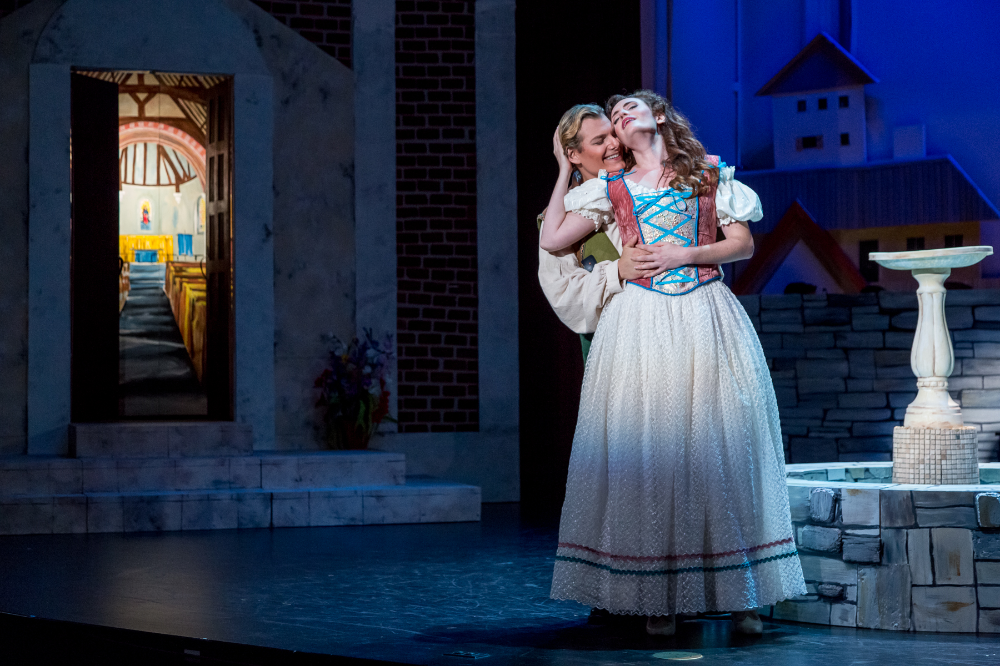

Singer | Actress | Educator


"...a gorgeous Konstanze…has the kind of lovely and flexible voice that can navigate intricate coloratura one minute and deliver a subtle put-down the next.""
-The Washington Post
As Act II opened, Countess Almaviva (Bridgette Gan) provided a production highlight with her lamentation over her husband’s infidelity. It was heartfelt and pointed, and labeled Gan as the one to listen to.
-Deseret News
But the real draw is the promising Bridgette Gan as Adina, who made a strong impression in her St. Petersburg Opera debut. From her opening aria, Of the Cruel Isolda, Gan captures the ear and eye with power and precision... It was hard to watch her performance and imagine anyone else playing Adina.
-Tampa Bay Times
About
Praised by the Washington Post for her “gorgeous singing,” Bridgette Gan is quickly establishing herself as a vibrant interpreter of opera, concert and crossover works. Recently, Ms. Gan had the honor of performing as the guest soloist for Wheeling Symphony’s Music Under the Stars concert, the nation’s first live concert with orchestra following the general shutdown of performances due to the COVID-19 pandemic. In the 2021/2022 season, Bridgette makes her role and house debut as Valencienne in The Merry Widow with Opera Idaho and presents recitals with the Federation of the Art Song and Vocalis Consort (of which she is a founding member.)

Other recent highlights include her company debut with Utah Festival Opera as the Soprano Soloist for Oratorio from the Book of Mormon, Sharon in Terrence McNally’s Master Class, and the Countess in Le nozze di Figaro, for which Deseret News labeled her “the one to listen to.” She made her role debut as Norina in Don Pasquale with Opera Orlando, where she has also appeared as Musetta in La bohème, a guest soloist for their 2018 Gala, and the “vocally and comically sparkling” (Orlando Sentinel) Bethany Squills in their modernized production of Mozart’s The Impresario, and debuted her Adina in L’elisir d’amore with St. Petersburg Opera.
Ms. Gan made her mainstage debut with Santa Fe Opera as Lila in the world premiere of Jennifer Higdon’s Cold Mountain, a recording of which is available on Pentatone Records and was nominated for the Grammy Award for Best Opera Recording. A former resident artist with Palm Beach Opera, she has been seen there as Stella in Les contes d’Hoffmann, Zerbinetta in Ariadne auf Naxos, and Marie in La fille du regiment, with Edge Media Network calling her performance “a tour de-force…vocally beautiful and consistent with a rich tone and sparkling high notes… a great star turn for a young singer who has a world of potential in front of her. She has also appeared with the Pacific Symphony as Papagena in The Magic Flute, the Center for Contemporary Opera as Jackie Kennedy in a reading of Chandler Carter’s opera Bobby, and Central City Opera as Frasquita in Carmen, Venus and Eurydice in Orpheus in the Underworld, Madeline/Isabel in The Face on the Barroom Floor, and Celie in Signor Deluso.

In concert she has appeared with the U.S. Marine Chamber Orchestra for Barber’s Knoxville: Summer of 1915, the South Florida Symphony for their ”And the Tony Goes to…” concert tour, Toledo Symphony for their Rodgers and Hammerstein Celebration concert tour, and was featured at the Newport Music Festival.
Bridgette has won prizes from the Gerda Lissner Foundation, Central City Opera, the Licia Albanese Puccini Competition, the Giulio Gari International Vocal Competition, Opera Index Vocal Competition, the Violetta DuPont Vocal Competition, the Philadelphia Orchestra Albert M. Greenfield Competition, the National Opera Association Voice Competition, the National Foundation for Advancement of the Arts, and was a Grant Nominee for the Sara Tucker Award. She has been an apprentice with Santa Fe Opera, Opera Theatre of St. Louis, Central City Opera, and Ash Lawn Opera.
Having made her start in musical theater, Ms. Gan has been seen crossing genres to perform Luisa in The Fantasticks (Mount Gretna Playhouse) Rosa Bud in The Mystery of Edwin Drood, Rapunzel in Into the Woods and Lily in The Secret Garden (The Whitaker Center), and Julie Jordan in Carousel (Ash Lawn/Charlottesville Opera), among many others. Bridgette maintains a thriving private voice studio, working with students of all ages all over the USA and internationally as a music fellow with Shanti Bhavan Project in India. She is also an accomplished Fitness Instructor and Presenter, holding certifications in Zumba and Strong Nation.